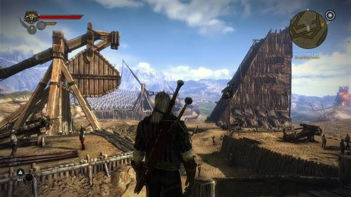
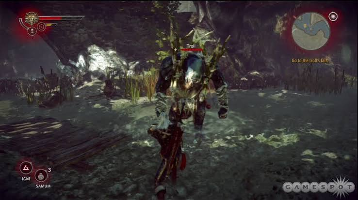

The Witcher 2

The Witcher 2: Assassins of Kings is an action role-playing game featuring Geralt of Rivia. Explore a rich fantasy world, make important choices, fight dangerous enemies and uncover a complex story filled with political conflict and adventure.
- Game: The Witcher 2: Assassins of Kings
- Genre: Action RPG
- Developer: CD Projekt RED
- Publisher: CD Projekt
- Platform: PC
- Mode: Single Player
MUST WATCH INSTALLATION VIDEO
ABOUT THE WITCHER 2
The Witcher 2: Assassins of Kings continues Geralt's adventures in a dangerous fantasy world. The game combines exploration, dialogue, quests, character progression and real-time combat.
Your decisions can affect characters, quests and the direction of the story, giving the game multiple possible outcomes.
GAME FEATURES
- Story-driven action RPG gameplay
- Large fantasy world to explore
- Choice-based storyline
- Real-time combat system
- Character progression and equipment
- Multiple quests and side activities
- Rich characters and dialogue
SYSTEM REQUIREMENTS
| Component | Minimum |
|---|---|
| OS | Windows XP / Vista / 7 |
| Processor | Intel Core 2 Duo 2.2 GHz / AMD equivalent |
| RAM | 1 GB |
| Graphics | NVIDIA GeForce 8800 / ATI Radeon HD 3850 |
| Storage | Approximately 25 GB available space |
SCREENSHOTS


